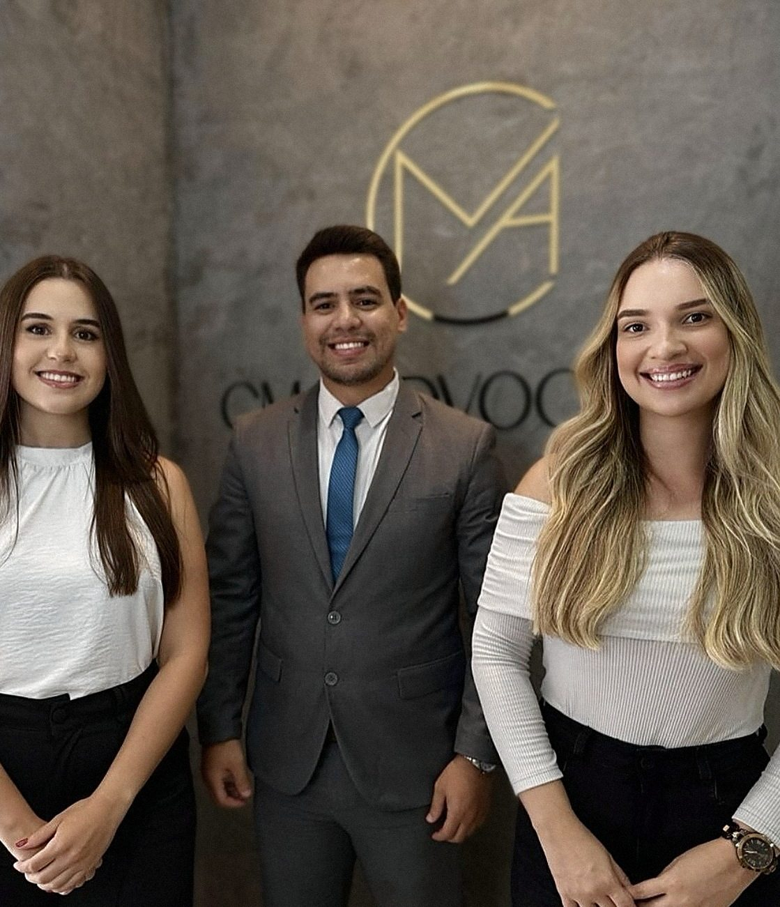
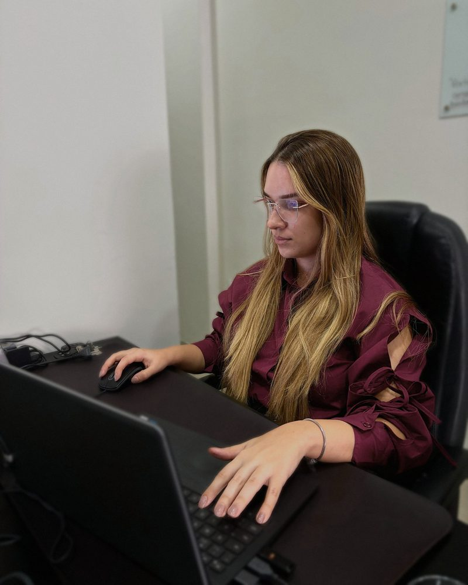
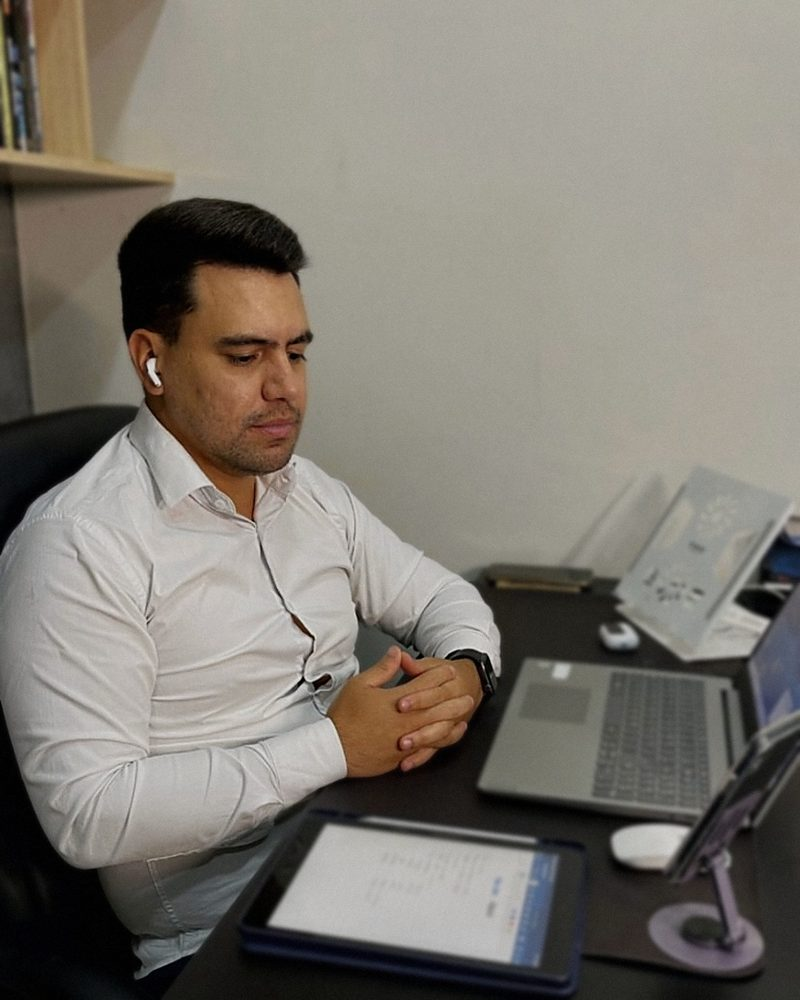

Você trabalhou, contribuiu e cuidou dos seus. Nossa equipe analisa o seu caso, explica em palavras simples quais são as possibilidades e acompanha você em cada etapa, do INSS à Justiça.
Resposta rápida, por mensagem ou áudio. Sem precisar sair de casa.
O auxílio-acidente é o benefício mais esquecido do INSS. Quem sofreu um acidente, de qualquer tipo, e ficou com alguma limitação permanente, pode ter esse direito e nem saber.
Não precisa parar de trabalhar. O benefício é pago junto com o seu salário, todo mês.
Uma vez concedido, é pago até você se aposentar. Anos de renda a mais na sua casa.
Não precisa ter sido no trabalho. Moto, queda, acidente em casa ou na rua também contam.
O INSS deve pagar desde o dia em que o auxílio-doença acabou. Pode ser mais de um ano de valores de uma vez.
Não exige tempo mínimo de contribuição. Basta ter qualidade de segurado na data do acidente.
Não precisa estar incapacitado. Basta que a limitação exija mais esforço para fazer o mesmo trabalho.
Contadas pela nossa equipe, com o primeiro nome dos clientes e a autorização deles. Cada caso é único, e o resultado depende sempre da análise individual.
O INSS não reconheceu a sequela do Giliarde. Entramos na Justiça Federal de Caruaru, a sentença foi favorável e o juiz mandou o INSS pagar os atrasados, com correção. O valor foi requisitado em nome dele em 2025.
O auxílio-doença do Gilvan foi cortado em agosto de 2024 e o INSS não reconheceu a sequela que ficou. Ele voltou a trabalhar com dificuldade e sem nenhum benefício. Entramos com o pedido, provamos a sequela e o auxílio-acidente foi deferido.
Pedido feito direto no INSS, com a documentação médica organizada pela equipe. Em cerca de três meses o INSS reconheceu o direito. Agora cobramos na Justiça os anos em que ele deveria ter recebido e não recebeu.
A mãe do João Lucas recorreu sozinha e o caso travou. Assumimos a defesa no recurso e o Conselho de Recursos da Previdência acolheu o pedido, reativando o benefício.
Quando o pedido entra completo e do jeito certo, o INSS não tem o que questionar. Esta cliente chegou por indicação de outra família atendida e teve o benefício aprovado no dia seguinte ao protocolo.
Família de baixa renda, criança com deficiência, laudos organizados e o pedido bem fundamentado. Concessão direta na via administrativa, em setembro de 2026.
Filha de uma cliente antiga do escritório, ela não sabia que podia receber o salário-maternidade na situação dela. A equipe analisou as contribuições, fez o pedido e o INSS concedeu.
Exemplos ilustrativos de situações que chegam ao escritório. Se alguma parece com a sua, vale a pena conversar.
Amputação após acidente, voltou a trabalhar com prótese e o INSS negou o auxílio-acidente dizendo que ele "está apto". A lei garante o benefício justamente para quem trabalha com sequela.
Parece o meu casoLaudo, terapias, escola adaptada e a perícia do INSS concluindo que a criança não tem impedimento de longo prazo. Com o laudo certo e o pedido bem feito, o cenário muda.
Parece o meu casoAcidente de moto no caminho de casa, não foi no trabalho. Voltou a rodar com dor e menos força. Muita gente nem imagina que isso pode dar direito a receber do INSS todo mês.
Parece o meu casoViúva, sem renda, morando com a filha que ganha pouco. Achava que só quem pagou INSS tem direito a alguma coisa. O BPC do idoso existe exatamente para ela.
Parece o meu casoCada botão abre o WhatsApp com a sua dúvida já escrita. É só enviar.
Sequela de acidente de qualquer tipo, mesmo que você já tenha voltado a trabalhar.
Falar sobre auxílio-acidenteAutismo, síndrome de Down, deficiência física ou intelectual. Um salário mínimo por mês para famílias de baixa renda.
Falar sobre BPCA partir de 65 anos, mesmo sem nunca ter contribuído, quando a renda da família é baixa.
Falar sobre BPC idosoPor idade, tempo de contribuição, regras de transição e planejamento para se aposentar na melhor regra.
Falar sobre aposentadoriaPara mães empregadas, desempregadas, MEI, autônomas ou rurais. Também em caso de adoção.
Falar sobre maternidadeO INSS negou, cessou ou pediu documentos que você não entende? Existem caminhos: recurso, novo pedido ou Justiça.
Meu benefício foi negadoPelo WhatsApp, por texto ou áudio. Sem burocracia e sem sair de casa para o primeiro contato.
Verificamos documentos, contribuições e requisitos e explicamos, com clareza, quais são as possibilidades.
Do pedido no INSS ao processo na Justiça, se for preciso. Você acompanha cada passo pelo WhatsApp.
Campos, Melo e Andrade Advocacia. Escritório físico em Caruaru-PE, atendendo famílias de toda a região.

Atendimento e acolhimento das famílias. É quem recebe o seu primeiro contato e acompanha você do início ao fim.

Atuação em processos administrativos e judiciais de saúde e benefícios por incapacidade.

Atuação previdenciária: BPC, auxílio-acidente, aposentadorias, recursos e ações contra o INSS.
A CMA Advocacia é avaliada com nota máxima por dezenas de famílias atendidas em Caruaru e região. As avaliações são públicas e podem ser conferidas na nossa ficha do Google.
Não. O primeiro contato e a análise inicial são feitos pelo WhatsApp. Você só se desloca se preferir ou quando for necessário assinar documentos.
Sim, pode ter. O auxílio-acidente existe justamente para quem voltou a trabalhar com alguma limitação permanente. Ele é pago junto com o salário.
Pode ter. O BPC/LOAS não exige contribuição: depende da deficiência ou da idade (65 anos ou mais) e da renda da família.
Não necessariamente. Uma negativa pode ser revista por recurso administrativo, por novo pedido com a documentação correta ou por ação na Justiça.
Depende do benefício e do caminho. Pedidos administrativos bem instruídos costumam sair em poucos meses. Processos judiciais levam mais tempo, e você recebe os valores atrasados ao final.
Explicamos tudo na conversa inicial, de forma transparente e por escrito, antes de qualquer contratação. Nada é cobrado sem o seu conhecimento.
Mande uma mensagem e escolha o melhor horário para conversar, por WhatsApp ou no escritório em Caruaru. Entender os seus direitos não custa nada, e pode mudar a rotina da sua família.
Agendar atendimento pelo WhatsApp